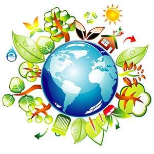
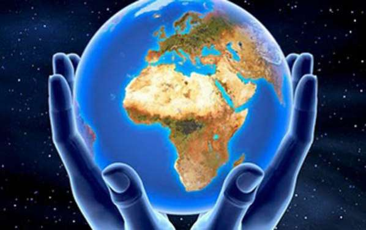
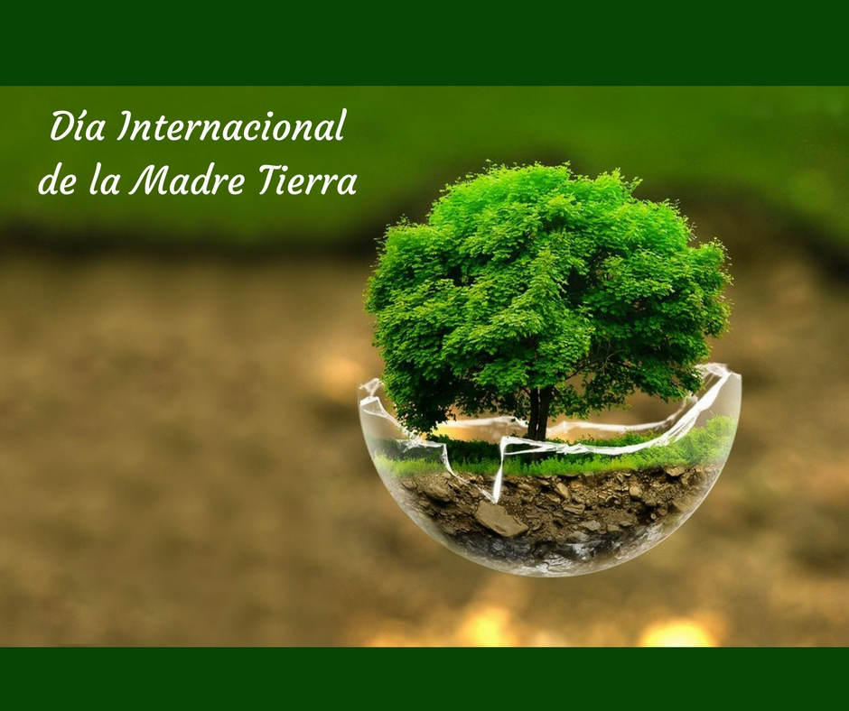
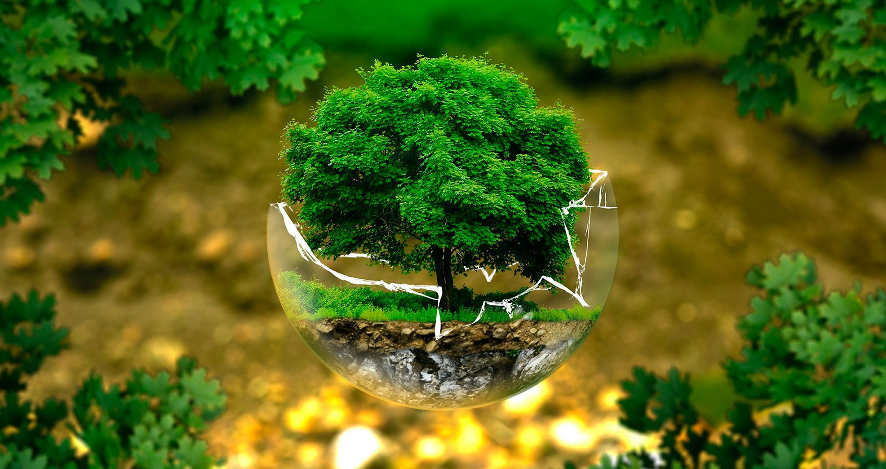
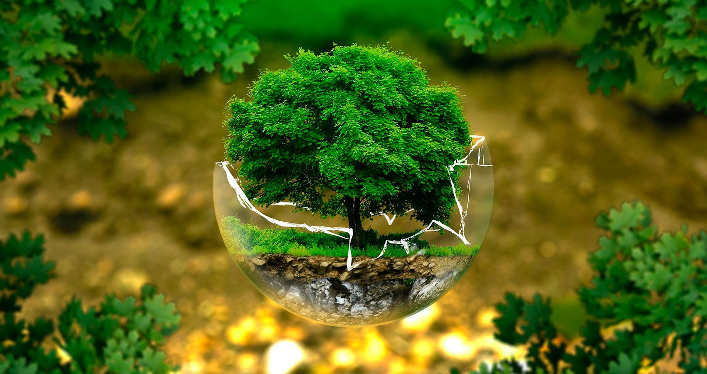
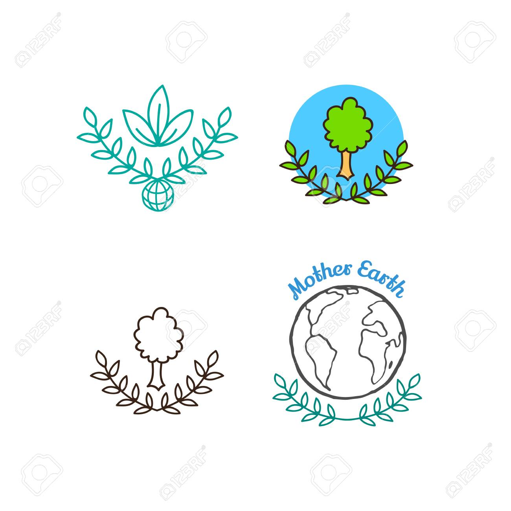
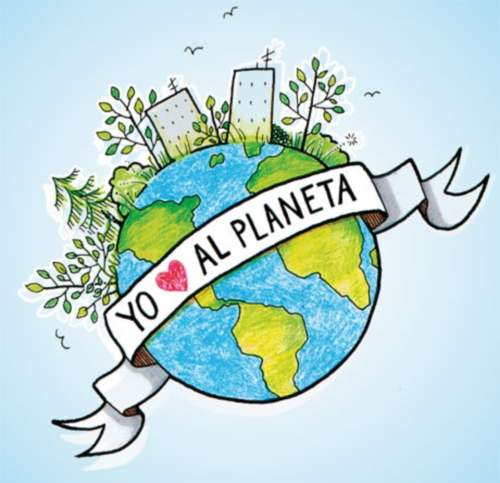

Dia Internacional De La madre Tierra 22 de abril

- 


- 
- 
Realizado por:
MIGUEL ANGEL JUAREZ ROMERO
4 H
Especialidad
Programacion
Submodulo
Desarrola Aplicaciones Móviles
Docente:
Lic.José Antonio Gómez Hernández
4 H
Programacion
Desarrola Aplicaciones Móviles
Lic.José Antonio Gómez Hernández
El Día Internacional de la Madre Tierra, que se celebra el 22 de abril, es una oportunidad para concienciar a los habitantes del planeta sobre los problemas que afectan al mundo y encontrar un equilibrio con las necesidades económicas y sociales. En todo el mundo se realizan actos para celebrar esta fecha, pero sobre todo para implementar acciones necesarias para cuidar, mantener, conservar y valorar la Tierra y todos sus recursos naturales. En 2009, la Organización de las Naciones Unidas (ONU) decretó el 22 de abril como el Día Internacional de la Madre Tierra con el fin de recordar a todo el mundo la interdependencia existente entre los seres humanos y el resto de las especies. Un año después, en 2010, México fue sede de la celebración Décimo Aniversario del Lanzamiento de la Carta de la Tierra, que se llevó a cabo en Guanajuato, donde se abordó por primera vez el tema de la mitigación y adaptación de las personas ante el inminente cambio climático. De acuerdo con la Secretaría del Medio Ambiente y Recursos Naturales, la Madre Tierra es una expresión común utilizada para referirse al planeta Tierra en diversos países y regiones. Según la Comisión Nacional para el Desarrollo de los Pueblos Indígenas, la Madre Tierra es la raíz de la vida, por ello es importante cuidarla y protegerla, "ella es el territorio común en donde habitan las comunidades, así mismo forma parte de su patrimonio cultural".
Según el refrán “Todos los días son el Día de la Tierra”. Pero se celebra popularmente el 22 de abril. ¿Por qué? Las malas lenguas sostienen que el 22 de abril fue elegido como el Día de la Tierra por el cumpleaños de Vladimir Lenin, el fundador de la Unión Soviética, que por una mera coincidencia se celebran el mismo día. Según Kathleen, una de las principales razones para elegir aquel 22 de abril de 1970 como el primer Día de la Tierra porque ese año cayó en un miércoles, el día de la semana ideal para convocar una manifestación por el medio ambiente en todo el país. "Todo funcionó a la perfección, porque todo el mundo fue a la manifestación al terminar su jornada laboral” dijo Kathleen. De hecho, más de 20 millones de personas en los EE.UU. participaron en el primer Día de la Tierra. A partir de entonces, este día se celebra cada año con la una participación superior a los mil millones de personas en 180 países de todo el mundo, según los datos de Rogers. En 1969, Nelson tuvo la idea de organizar una protesta en favor del medio ambiente tomando como modelo las manifestaciones en contra de la guerra de Vietnam. "Fue algo frenético. Nos llegaban telegramas, cartas y consultas telefónicas desde todas partes del país", escribiría Nelson en un ensayo poco antes de morir en julio de 2005 a los 89 años. "El pueblo estadounidense por fin tenía un foro para expresar su preocupación sobre lo que estaba sucediendo con la tierra, los ríos, los lagos y el aire, y lo hicieron de forma espectacular". Nelson reclutó al activista Denis Hayes para organizar aquel primer 22 de abril en1970. Hoy en día se reconoce a Hayer como el precursor del movimiento ecologista moderno. La Agencia de Protección Medioambiental de EE.UU nació a finales de 1970, y desde entonces los esfuerzos para mejorar la calidad del aire y el agua fueron ganando terreno en el ámbito político. "Fue verdaderamente increíble lo que pasó ", dijo Rogers. "Los muros simplemente se derrumbaron”.
El domingo pasado 22 de abril se celebró el Día Internacional de la Madre Tierra, desde la CEDU participamos a través de la difusión y compromiso en la búsqueda de un justo equilibro entre las necesidades económicas, sociales y ambientales de las generaciones presentes y futuras, promoviendo una cultura armónica con la naturaleza y Madre Tierra. «Madre Tierra» es una expresión común utilizada para referirse al Planeta Tierra en diversos países y regiones, lo que demuestra la interdependencia existente entre los seres humanos, las demás especies vivas y el planeta que todos habitamos. La Tierra y sus ecosistemas son nuestro hogar. Para alcanzar un justo equilibrio entre las necesidades económicas, sociales y ambientales de las generaciones presentes y futuras, es necesario promover la armonía con la naturaleza y el planeta. Celebramos el Día Internacional de la Madre Tierra para recordar que el planeta y sus ecosistemas nos dan la vida y el sustento. Con este día, asumimos, además, la responsabilidad colectiva, como nos recordaba la Declaración de Río de 1992, de fomentar esta armonía con la naturaleza y la Madre Tierra. Este día nos brinda también la oportunidad de concienciar a todos los habitantes del planeta acerca de los problemas que afectan a la Tierra y a las diferentes formas de vida que en él se desarrollan.
En el boton podran ver el video de la conferencia que se llevo a cabo sobre la armonia con la naturaleza
“Estamos en un momento crítico de la historia de la Tierra, en el cual la humanidad debe elegir su futuro…” Así inicia el preámbulo de la Carta de la Tierra, aprobada por la Comisión del Medio Ambiente de las Naciones Unidas, en Paris, en el año 2000, después de un largo proceso de consenso iniciado en 1987, como un esfuerzo internacional que involucró, como nunca, un amplio proceso participativo que sumó las voces de diversos sectores de la sociedad, con sus diferentes preocupaciones, perspectivas y necesidades, pero con una visión compartida: la protección ambiental, los derechos humanos, el desarrollo humano equitativo y la paz. Más adelante, en el mismo preámbulo, señala que “Todos compartimos una responsabilidad hacia el bienestar presente y futuro de la familia humana y del mundo viviente en su amplitud…” En este marco y retomando el concepto de Responsabilidad Social Empresarial, definido por Cajiga Calderón, como “el compromiso consciente y congruente de cumplir integralmente con la finalidad de la empresa, tanto en lo interno como en lo externo, considerando las expectativas económicas, sociales y ambientales de todos sus participantes, demostrando respeto por la gente, los valores éticos, la comunidad y el medio ambiente, contribuyendo así a la construcción del bien común”, surge la reflexión sobre la relación entre la Carta de la Tierra, sus Principios y el papel que juegan las empresas, para alcanzar un verdadero desarrollo sostenible, en sus dimensiones social, económica y medioambiental. Es incuestionable la relevancia que tienen hoy las empresas a nivel mundial, como líderes y agentes de cambio y, en ese sentido, la Carta de la Tierra es una importante guia de navegación para hacer coincidir de manera armoniosa y equilibrada sus intereses y objetivos en el terreno productivo con su responsabilidad social, como lo ilustran algunas buenas prácticas ambientales e iniciativas desarrolladas por empresas y organizaciones en diversos países, como Itaipú Binacional; la Iniciativa Global para la Presentación de Informes (GRI, por sus siglas en inglés); Philips Brasil; la Universidad Abierta para el Medio Ambiente y una Cultura de Paz (UMAPAZ), en Brasil (Earth Charter International, (2010).
